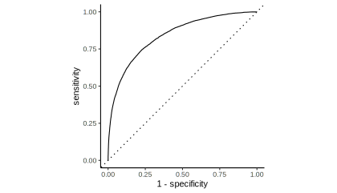
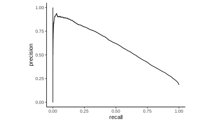

load("okc_glm_keyword.RData")Precision Recall and ROC
Precision Recall Curve is shown as an alternative to the known ROC curve in the “second part from the ‘Measuring Performance’ Chapter of Feature Engineering and Selection”. It is mentioned that this curve is more appropriate in terms of Information Retrieval.
Original Code
The code is almost identical to the original code that can be found on github.
Alternatively you can download the caret object from here and load it into the global environment by running the following command:
Creating Performance Metrics Curves with yardstick
library(yardstick)
library(ggplot2)
library(magrittr)
glm_keyword$pred %>%
roc_curve(obs, stem) %>%
autoplot() +
theme_classic()
library(yardstick)
library(ggplot2)
library(magrittr)
glm_keyword$pred %>%
pr_curve(obs, stem) %>%
autoplot() +
theme_classic()
Creating Performance Metrics Curves with rtichoke
library(rtichoke)
create_roc_curve(
probs = list(
glm_keyword$pred$stem),
reals = list(
glm_keyword$pred$obs == "stem"),
size = 350
)library(rtichoke)
create_precision_recall_curve(
probs = list(
glm_keyword$pred$stem),
reals = list(
glm_keyword$pred$obs == "stem"),
size = 350
)